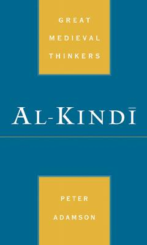

ABuyuk musulmon faylasufi Al-Kindiyning hayoti va falsafiy qarashlari haqida ilmiy tadqiqot.
Ushbu kitob mashhur musulmon faylasufi Al-Kindiyning hayoti va ilmiy merosiga bag'ishlangan. Muallif faylasufning o'rta asrlar islom tafakkuriga qo'shgan hissasini va uning falsafiy qarashlarini chuqur tahlil qiladi.